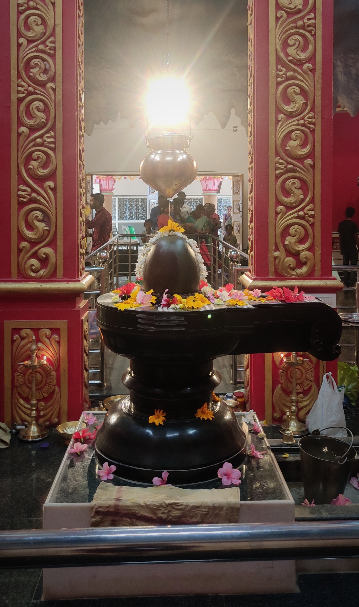

A beautiful scenic view with a huge statue of Lord Shiva and Nandi, and Inside resides a beautiful temple of Shri Rameshwara.
A huge 22ft tall statue of a Nandi facing Lord Shiva's statue.
A magnificent 78ft tall statue of Lord Shiva with temple below the statue.

An auspicious Shri Rameshwara Idol inside the temple.
Inside the temple there are also the statues depicting stories like Bhagiratha Prayatna, Ardhanarishwar Avatar and many more...
Photo Gallery
A promisingly good place to visit. The Magnificent statue of Lord shiva and Nandi, beautiful scenic view from top of the hill,
and also a quiet relaxing park while entering into the premises named Salumarada Thimmakka Vrukshodhyana Dodamangadi.